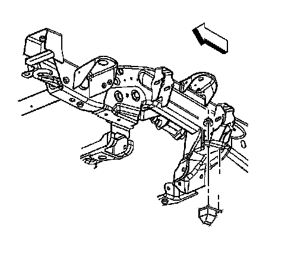

Front Suspension
Spring Jounce Bumper Replacement (2500 Series)
Removal Procedure
Important: The following service procedure is for 2500 series vehicles.
1. Raise and support the vehicle. Refer to Lifting and Jacking the Vehicle.
2. Remove the tire and wheel.

3. Remove the nut from the jounce bumper stud.
4. Remove the jounce bumper.
Installation Procedure
1. Install the jounce bumper.
Notice: Refer to Fastener Notice.
2. Install the nut to the jounce bumper stud.
Tighten the nut to 30 N.m (22 lb ft).
3. Install the tire and wheel.
4. Lower the vehicle.